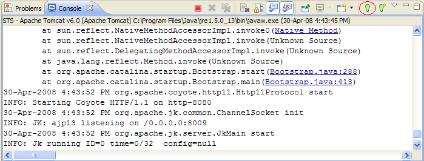
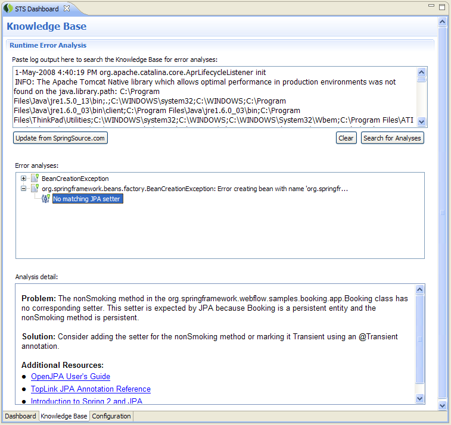
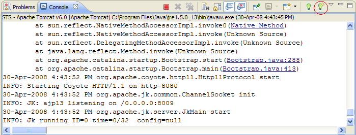
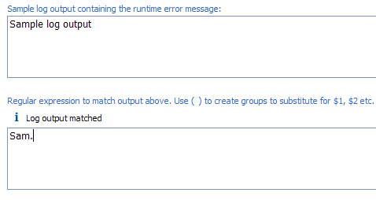
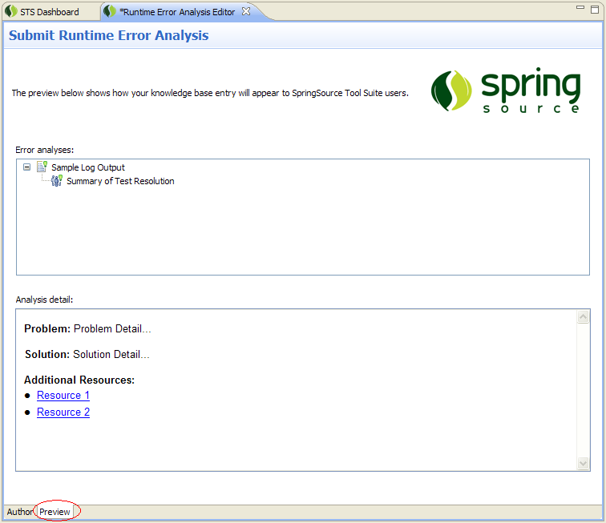
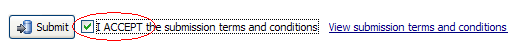
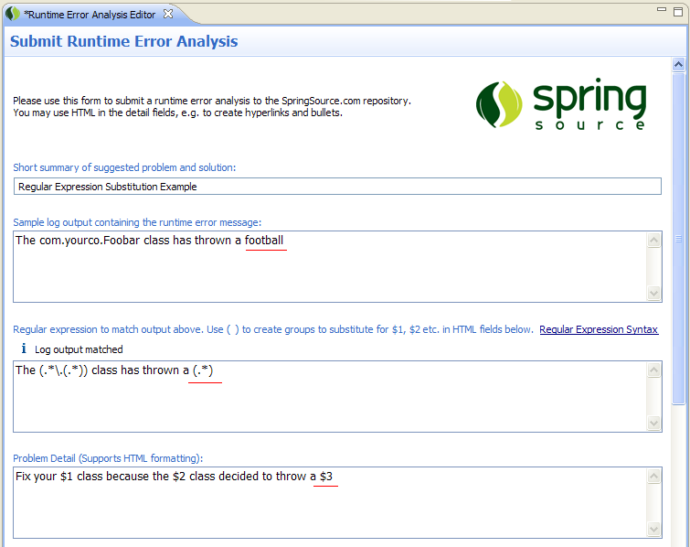
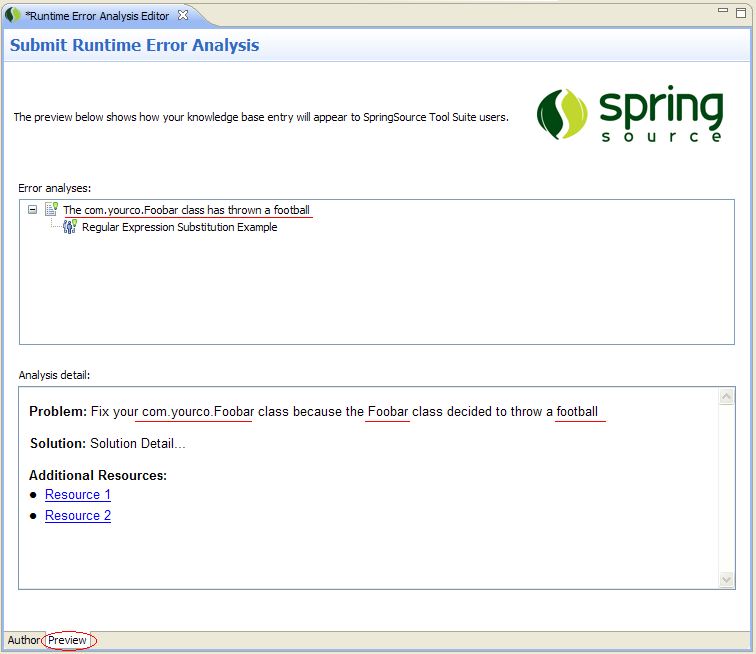

When a runtime error occurs in the application you are developing, SpringSource Tool Suite can analyze the error log output and suggest solutions to common log output error messages. The suggested solutions are stored in a local knowledge base that can be periodically updated with new content from SpringSource.com. The content of the repository is produced by Spring developers who contribute it using an authoring tool included with the SpringSource Tool Suite. As more developers contribute content, there will be more solutions available to a wider range of output problems.
Viewing runtime error analyses
When viewing log output in the console view, any error messages with available analysis information will appear in blue and underlined. You can hover over the underlined text to view a tooltip containing the analysis information.
To view all available analyses for the entire console contents, click the light bulb button at the top right of the console view with the tooltip label, "View runtime error analysis."

This will open the Knowledge Base tab of the SpringSource Tool Suite dashboard. Your console log output is automatically copied into the log output field and you can see the results below. If there are any results, you can browse them in the "Error analyses" tree. Selecting an analysis displays its details in the box below.

If the log output you wish to analyze isn't in the console view, you can paste the output into the log output box at the top of the Knowledge Base tab and click "Search for Analyses."
Authoring Runtime Error Analysis
The knowledge base content is contributed by the Spring developer community. If you have resolved a runtime error that others may encounter, others can benefit from your solution if you contribute it as a runtime error analysis.
Use the following step-by-step instructions to contribute a new runtime error analysis.
r clear="all" />
- It is recommended that you start by reproducing the problem so that the error message is visible in your console view
- Highlight the error message and click the "Create new runtime error analysis" button in your console view.

- If you haven't already done so, you will be prompted to enter your credentials for the SpringSource Knowledge Base. Enter the same account information that you used to create an account and download the SpringSource tool suite.
- An editor will appear that you can use to author your runtime error resolution. This editor contains a box where your highlighted console log output appears. Below this box, write a regular expression that will match this log output. Be sure to remove any project-specific output and replace it with the appropriate regular expression syntax (e.g. your class and package names). The label above the regular expression box will indicate if the expression matches the log output. The screenshot below shows the appearance of the editor when there is a match:
r clear="all" />

 | Tip
When entering Addtional Resources, consider making a bulleted list of links to resources like this:
<li> <a href="http:>Resource 1</a>
<li> <a href="http:pan class="code-comment">//resource2.com">Resource 2</a>
|
- Click the "Preview" tab at the bottom to see how your suggested runtime error resolution will appear to the user. This is a good way to check your HTML formatting. The preview tab is shown below:

- Return to the "Author" tab and click the link near the bottom to read the legal terms and conditions regarding your submission. If you agree to the terms, check the "I ACCEPT..." box, and click "Submit"

- After submitting, the Task List view will open. You can use this view to open, modify, and re-submit runtime error resolutions.
 | Note
The content you submit will not be immediately available to test within your development environment. The content will be periodically reviewed and then packaged into a future release. |
Updating your local knowledge base
To update your local runtime error analysis knowledge base to the latest content, click the SpringSource icon in the toolbar. The SpringSource Stool Suite dashboard will appear. Select the "Knowledge Base" tab at the bottom. In the Knowledge Base tab, click the "Update from SpringSource.com" button.

Authoring
tips and best practices
Variable Substitution
You can use placeholder variables in your HTML content that can be substituted for content from the end user's actual log output.
Use "(" and ")" to create capture groups in the regular expression that select the content that is to be substituted into the HTML content. In the HTML content, use variable names $1, $2, etc to indicate where the captured content is to be substituted. See the example below:

Use the preview tab to check the results of the substitution

Matching log output spanning multiple lines
If the log output you wish to match spans multiple lines, use "\r\n" in your regular expression to match the line breaks.
Multiple analyses for the same log output problem
In many cases there are several possible ways to resolve a runtime error. For example, the solution may depend on the technology stack or the version of Spring in use. The SpringSource Tool Suite can support multiple analysis results for the same log output problem, so you can create as many analyses as you need to cover the known solutions to the problem. If your analyses for a particular output problem are specific to a version of Spring or a database vendor, for example, it is good practice to include the version or database vendor in the summary so the user can easily find the content that applies to their environment.